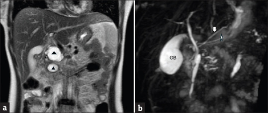
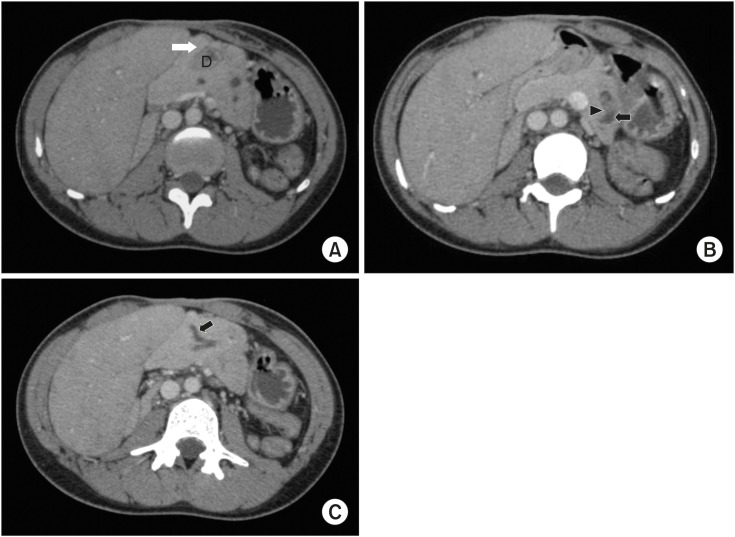

6152 — Viêm tụy mạn ở trẻ: vôi hóa – giãn ống – teo nhu mô / Chronic pancreatitis in children
Tags: pattern:voi-hoa-tuy pattern:soi-ong-tuy pattern:gian-ong-tuy pattern:teo-tuy pattern:nang-gia-tuy pattern:hep-ong-tuy vung:tuy vung:o-bung score:Cambridge score:INSPPIRE-2018 protocol:MRI-MRCP protocol:CT-bung-co-can-quang protocol:sieu-am-bung protocol:ERCP
Mức chắc chắn (certainty): tổng hợp y văn (literature synthesis) — ghép meta-analysis tiến triển viêm tụy ở trẻ 68 nghiên cứu (Clin Exp Pediatr 2026, PMC12877302, CC BY-NC), đoàn hệ 48 trẻ viêm tụy mạn có bảng hình ảnh theo từng modality (J Indian Assoc Pediatr Surg 2025, PMC12643358, CC BY-NC-SA 4.0 — nguồn 2 ảnh MRCP), tổng quan điều trị nội soi–phẫu thuật ở trẻ (Children 2024, PMC10813922, CC BY), đoàn hệ 51 trẻ/131 lần ERCP (BMC Pediatr 2026, PMC13393790, CC BY 4.0), đoàn hệ CT 160 ca dùng phân độ Cambridge (JGH Open 2026, PMC13243886, CC BY 4.0) và ca nguyên văn gia đình PRSS1 (Front Pediatr 2024, PMC11228964, CC BY 4.0 — nguồn 1 ảnh MRCP). Nhóm không có bệnh nhân của mình; chỗ các nguồn khác quần thể (trẻ chuyển tuyến nặng vs người lớn nghiện rượu) được ghi rõ ngay dưới số liệu.
Câu chốt: viêm tụy mạn ở trẻ không phải bệnh của người nghiện rượu thu nhỏ — nó là bệnh di truyền/tắc nghẽn, và chờ vôi hóa để chẩn đoán là bỏ sót. Ba số phải thuộc: (1) mới mắc khoảng 2/100.000 trẻ/năm, nhưng 18% trẻ viêm tụy cấp tái phát và 35% trong số tái phát tiến triển thành mạn; (2) PRSS1 tăng nguy cơ mạn OR 4,56 (3,06–6,80), pancreas divisum OR 2,64 (1,51–4,63), bất thường giải phẫu → tái phát OR 3,15 (1,51–6,56); (3) trong đoàn hệ trẻ chỉ 44% (22/48) có vôi hóa trên bất kỳ modality nào — và ở viêm tụy tự miễn thì 0%; vì vậy chẩn đoán dựa trên ống tụy + nhu mô + suy chức năng, không dựa riêng vào sỏi/vôi.
1. Tổng quan bệnh học – cơ chế hình ảnh
1.1 Dịch tễ và vì sao trẻ khác người lớn
- Mới mắc: viêm tụy cấp ở trẻ 3–13/100.000/năm; viêm tụy mạn (chronic pancreatitis, CP) khoảng 2/100.000/năm (PMC12877302). Ở người lớn, nguyên nhân hàng đầu là rượu và thuốc lá; ở trẻ hai yếu tố này hiếm khi gặp, thay vào đó là đột biến gen và bất thường giải phẫu (PMC12877302, PMC10693666).
- Đường đi tự nhiên (số gộp): sau cơn viêm tụy cấp đầu tiên, 18% (95% CI 16–22%, 39 nghiên cứu) tái phát thành viêm tụy cấp tái diễn (acute recurrent pancreatitis, ARP) và 10% (6–16%, 5 nghiên cứu) thành mạn; trong nhóm ARP, 35% (24–49%, 7 nghiên cứu) tiến triển thành mạn (PMC12877302).
- Mức nặng cơn đầu dự báo tái phát: cơn nặng → ARP 39%, trung bình 24%, nhẹ 21%; theo nguyên nhân, tăng triglyceride 33%, vô căn 28%, sỏi mật 19%, chấn thương 16%, do thuốc 14%, do virus 3% (PMC12877302).
- Nguyên nhân ở trẻ: vô căn 30–60% (Trung Quốc 65–73% trong một số đoàn hệ), bất thường giải phẫu tới 30% (pancreas divisum, nang ống mật chủ, tụy vòng, hẹp ống sau chấn thương), tự miễn ~10%, chấn thương: tới 36% trẻ vỡ ống tụy tiến triển mạn (PMC10813922, PMC10693666, PMC12643358).
- Gánh nặng: chi phí trung bình 38.755 USD/người/năm cho một trẻ ARP/CP (registry INSPPIRE, dẫn qua PMC10693666); trẻ nghỉ học, đau mạn, nguy cơ phụ thuộc opioid và suy tụy ngoại tiết/đái tháo đường type 3c (PMC10813922).
1.2 Sinh lý bệnh: từ trypsinogen đến xơ hóa và sỏi
- Trục chính là trypsin: PRSS1 mã hóa trypsinogen (tiền men); SPINK1 mã hóa chất ức chế trypsin thứ nhất (ức chế ~20% trypsin hoạt hóa sớm); CTRC (chymotrypsin C) là hàng phòng thủ thứ hai; CFTR quyết định độ kiềm và độ loãng dịch tụy. Đột biến làm hoạt hóa trypsin sớm trong tuyến → tự tiêu mô → viêm tái diễn (PMC12643358, PMC10693666).
- Xơ hóa: tổn thương lặp lại hoạt hóa tế bào sao tụy (pancreatic stellate cells) → lắng collagen quanh ống và tiểu thùy → hẹp ống không đều + tắc + sỏi → ứ dịch → giãn ống phía trên → teo nhu mô và thay mỡ. Vì vậy trên ảnh, giãn ống và teo là hai mặt của cùng một quá trình tắc nghẽn–xơ hóa, không phải hai bệnh (PMC10813922).
- Suy chức năng đến trước hay sau hình ảnh: suy tụy ngoại tiết (exocrine pancreatic insufficiency, EPI) có thể xuất hiện sau một cơn cấp và không tương quan chặt với mức giãn ống; trong đoàn hệ CT người lớn 160 ca, không có liên hệ có ý nghĩa giữa triệu chứng và độ Cambridge (PMC13243886) — nghĩa là ảnh đẹp không đồng nghĩa bệnh nhẹ, ảnh nghèo nàn không đồng nghĩa bệnh lành.
1.3 Vì sao hình ảnh trông đúng như vậy (vật lý + mô bệnh)
- Vôi hóa tụy sáng trên CT: tinh thể calci hydroxyapatite trong lòng ống/nhu mô có hệ số suy giảm tia X cao — cao hơn hẳn mô mềm (~40–60 HU), nhìn thấy ngay cả trên lát không cản quang → trắng đậm; ngưỡng HU chính xác chưa được chuẩn hóa trong y văn ("chưa rõ — cần tra"), nhưng đây là dấu hiệu đặc hiệu nhưng muộn (PMC13243886).
- Sỏi ống tụy là "lỗ đen" trên MRCP: MRCP dùng chuỗi T2 nặng (heavily T2-weighted) — chỉ dịch tĩnh (mật, dịch tụy) còn tín hiệu; sỏi không có proton tự do → mất tín hiệu (signal void), hiện thành khuyết đen trong ống trắng, kèm giãn ống phía trên (ảnh ca 3). Vì vậy MRCP nhìn thấy sỏi không cản quang, còn CT nhìn thấy cặn calci — hai modality bổ sung nhau, không thay thế nhau (PMC11228964).
- Teo nhu mô + thay mỡ: mô tụy mất dần, mỡ thay vào → trên T1 không ức chế mỡ nhu mô sáng bất thường (mỡ sáng T1), nhưng trên T1 fat-sat thì mất tín hiệu và nhu mô mỏng, giảm tín hiệu so với tụy bình thường. Vì vậy luôn đọc cặp T1 in-phase/fat-sat trước khi gọi "teo" (PMC12643358).
- Nang giả tụy: dịch giàu enzyme, không có biểu mô → T2 rất sáng, T1 tối, không ngấm thuốc, vách mỏng; khác u nhú thể đặc giả nhú (solid pseudopapillary neoplasm, SPN) ở trẻ gái — SPN có phần đặc ngấm thuốc + xuất huyết (bài 6120).
- Vì sao ưu tiên MRI ở trẻ (ALARA): mỗi CT bụng trẻ sơ sinh/trẻ nhỏ cho liều hiệu dụng cao hơn người lớn cùng vùng do kích thước nhỏ + cơ quan nhạy xạ gần nhau; viêm tụy mạn cần chụp lặp lại nhiều năm, nên MRI/MRCP là first-line, CT chỉ khi cần đánh giá calci, sỏi cản quang, hoặc quy hoạch mổ (PMC12643358, PMC10813922).
1.4 Ngưỡng định lượng bắt buộc nhớ
| Đại lượng | Ngưỡng | Ý nghĩa thực hành | Nguồn |
|---|---|---|---|
| Fecal elastase-1 | < 200 µg/g (không có ngưỡng đồng thuận tuyệt đối) | Gợi ý suy tụy ngoại tiết; < 100 µg/g = nặng | PMC11893156 |
| MPD trên MRCP | chưa có bảng chuẩn theo tuổi dùng rộng rãi; trong các ca bệnh báo cáo, ống 5 mm (anh trai), 8 mm (dịch mật), 9 → 6 mm do hẹp đều là bất thường | Giãn + không đều + hẹp = CP; so với chính bệnh nhân ở lần chụp trước hơn là áp ngưỡng người lớn | PMC11228964 |
| Sỏi ống tụy | 7 mm trong ca có giãn ống phía trên nặng | Sỏi > 5 mm thường cần ESWL/tán trước khi lấy qua nội soi | PMC11228964 |
| Nang giả tụy | trung vị 23 mm, 91,6% ≥ 10 mm (đoàn hệ người lớn) | ≥ 10 mm + triệu chứng/kéo dài mới can thiệp | PMC13243886 |
| Cambridge | 0–4 (dựa trên số nhánh phụ bất thường + ống chính; teo KHÔNG tính vào grade) | ≥ 3 nhánh phụ bất thường đã là grade ≥ 2; 92,5% đoàn hệ người lớn ở grade 4 | PMC13243886 |
| PEP sau ERCP nhi | 17,6% (23/131 lần) — 100% nhẹ | Cảnh báo cha mẹ trước thủ thuật; stent ≤ 5 Fr làm tăng nguy cơ | PMC13393790 |
2. Mẫu hình + chẩn đoán phân biệt theo vị trí (gamut)
2.1 Gamut theo mẫu hình chính
- Vôi hóa/sỏi trong ống: CP (di truyền, vô căn, sau chấn thương), sỏi ống tụy đơn thuần, tụy vòng có ứ đọng; hiếm: u thần kinh nội tiết (không vôi hóa kiểu sỏi).
- Giãn ống tụy đơn độc/không đều: CP (hẹp–giãn xen kẽ "chuỗi hạt"), pancreas divisum (giãn ống lưng), nang ống mật chủ type 1b (giãn cả đường mật + ống tụy), hẹp sau chấn thương ở cổ tụy, tắc do sỏi.
- Teo nhu mô lan tỏa ("tụy biến mất"): CP giai đoạn muộn, thay mỡ đơn thuần (béo phì, dùng corticoid), Shwachman–Diamond (suy tủy + EPI ở trẻ nhỏ), xơ nang (CF).
- Nang/hang: nang giả tụy (sau cơn cấp, không biểu mô), hoại tử có vách (walled-off necrosis, WON), SPN, nang ống mật chủ, nang bẩm sinh.
2.2 Gamut theo vị trí
- Đầu tụy/uncinate: tụy vòng (vòng mô tụy quanh tá tràng D2), nang ống mật chủ, hẹp ống sau viêm; đây là nơi hay bỏ sót nguyên nhân tắc.
- Thân–đuôi: CP di truyền/PRSS1 (tổn thương lan tỏa nhưng teo thân–đuôi rõ), pancreas divisum (hệ ống lưng chi phối thân–đuôi), nang giả (đoàn hệ: đuôi 47%, đầu 21%, thân+đuôi 21%).
- Lan tỏa: CP vô căn, tự miễn (P-AIP), xơ nang.
2.3 Mnemonic TIGAR-O (dùng để không bỏ sót nguyên nhân)
Toxic–metabolic (thuốc, tăng calci, tăng triglyceride, suy thận) · Idiopathic (30–60%) · Genetic (PRSS1, SPINK1, CFTR, CTRC, CASR) · Autoimmune (~10%) · Recurrent/severe acute pancreatitis · Obstructive (divisum, nang ống mật chủ, tụy vòng, hẹp sau chấn thương).
3. Bảng so sánh phân biệt (ma trận đối chiếu)
| Thực thể (entity) | Hình ảnh điển hình | Chốt vào (rule-in) | Chốt loại (rule-out) | Gợi ý xác nhận |
|---|---|---|---|---|
| Viêm tụy mạn (CP) | Vôi hóa nhu mô/ống, sỏi, giãn ống không đều, teo + thay mỡ, nang giả | ≥ 2 trong: sỏi/vôi hóa, giãn–hẹp ống không đều, teo nhu mô ở trẻ có đau tụy tái diễn | Ống và nhu mô hoàn toàn bình thường + không suy chức năng → chưa đủ CP | MRCP + fecal elastase; theo dõi 6–12 tháng |
| Pancreas divisum | Ống lưng giãn đổ qua nhú phụ (minor papilla), ống bụng nhỏ | Hai hệ ống không hòa nhau + ống lưng giãn | Ống lưng bình thường, không giãn → biến thể, không phải nguyên nhân | MRCP; có mặt ở ~5% dân số nên chỉ quy nguyên nhân khi giãn ống lưng + tái phát |
| Tụy tự miễn (P-AIP) | Tụy to lan tỏa mất phân thùy, ngấm muộn dạng đốm, vỏ bao, ống hẹp dài KHÔNG giãn, vôi hóa 0% | To lan tỏa + vỏ bao + IgG4 (chỉ 15,2%) + đáp ứng corticoid | Giãn ống rõ + sỏi/vôi hóa + teo → CP thật | Corticoid thử có kiểm soát (bài 6145) |
| Nang ống mật chủ | Giãn ống mật chủ + ống tụy, nang vùng đầu tụy, có thể sỏi trong nang | Giãn đường mật ngoài gan + ống tụy cùng lúc, nang thấy rõ | Chỉ giãn ống tụy, đường mật bình thường → không phải | MRCP + amylase dịch nang; cắt nang + nối mật ruột |
| Tụy vòng (annular pancreas) | Vòng mô tụy quanh D2 + giãn ống tụy + sỏi trong chỗ giãn, hẹp tá tràng | Vòng mô tụy liên tục quanh tá tràng trên CT/MRCP | Không thấy vòng mô quanh D2 | CT/MRCP; Puestow cải tiến nếu ống giãn |
| Thay mỡ đơn thuần | Tụy mỏng, sáng T1, mất tín hiệu trên fat-sat, không giãn ống, không sỏi | T1 sáng + fat-sat tối + ống bình thường | Có giãn ống/sỏi → CP | MRI in/out-phase; không cần điều trị đặc hiệu |
| SPN (u giả nhú đặc) | Khối đặc–nang hỗn hợp, xuất huyết, ngấm thuốc phần đặc, trẻ gái | Phần đặc ngấm thuốc + vôi hóa viền + trẻ gái | Nang thuần dịch, thành mỏng, không ngấm → nang giả | MRI + sinh thiết/mổ (bài 6120) |

Hình 1 — MRCP trẻ viêm tụy mạn. (a) Hai nang giả rõ (tam giác đen) cạnh đầu/uncinate, teo thân–đuôi. (b) Pancreas divisum không hoàn toàn: ống lưng giãn (sao trắng) chạy lên đổ nhú phụ; ống bụng nhỏ (mũi tên trắng) nối bên. Nguồn: J Indian Assoc Pediatr Surg 2025 (PMC12643358), CC BY-NC-SA 4.0, ảnh nguyên bản. Hình 2 — (a) Teo rõ thân tụy, ống tụy giãn + cặn calci; (b) MIP cho thấy nang ống mật chủ type 1b (sao) cạnh ống tụy giãn. Đây là ví dụ nguyên nhân tắc nghẽn phối hợp — điều trị phải gồm cắt nang + nối mật ruột, không chỉ điều trị tụy. Nguồn: PMC12643358, CC BY-NC-SA 4.0, ảnh nguyên bản.
Hình 2 — (a) Teo rõ thân tụy, ống tụy giãn + cặn calci; (b) MIP cho thấy nang ống mật chủ type 1b (sao) cạnh ống tụy giãn. Đây là ví dụ nguyên nhân tắc nghẽn phối hợp — điều trị phải gồm cắt nang + nối mật ruột, không chỉ điều trị tụy. Nguồn: PMC12643358, CC BY-NC-SA 4.0, ảnh nguyên bản.
3.1 Trình tự đọc MRCP ở trẻ nghi CP (5 bước)
- Đếm nhánh phụ bất thường (≥ 3 = Cambridge ≥ 2) và đo đường kính ống chính ở đầu/thân/đuôi.
- Tìm sỏi (khuyết tín hiệu trong ống) và vôi hóa (chỉ thấy trên CT) — không bỏ bước CT nếu MRCP âm mà vẫn nghi.
- Đo độ dày nhu mô thân/đuôi trên T1 fat-sat và so với tuổi; tìm thay mỡ.
- Truy nguyên nhân tắc: hệ ống (divisum), đường mật (nang ống mật chủ), tá tràng (tụy vòng).
- Tìm biến chứng: nang giả/WON, huyết khối tĩnh mạch cửa–lách (bài 163), giả phình động mạch (bài 6122).
4. Protocol chụp + phân độ + xử trí
4.1 Protocol (ALARA trước, chi tiết sau)
- Siêu âm bụng là bước đầu ở mọi trẻ đau bụng tái diễn: rẻ, không xạ, thấy giãn ống, sỏi lớn, nang giả; trong đoàn hệ 48 trẻ, siêu âm phát hiện giãn ống ở 23/48 và vôi hóa ở 21/48 — nhạy hơn CT ở nhóm này vì không cần cản quang (PMC12643358).
- MRI/MRCP (không cản quang + secretin nếu có) là chuẩn chẩn đoán và theo dõi ở trẻ: đánh giá hệ ống, nhu mô, nang, không nhiễm xạ. Lát ≤ 3 mm, T1 fat-sat + T2 + MRCP MIP.
- CT bụng có cản quang thì tĩnh mạch cửa khi: cần vôi hóa/sỏi cản quang, quy hoạch mổ, hoặc MRCP không giải thích được; giới hạn số lần vì trẻ sẽ chụp nhiều năm.
- ERCP chỉ để điều trị (không còn là chuẩn chẩn đoán): nong + stent ống tụy, cắt cơ nhú, lấy sỏi; cannulation thành công ~90% ở trung tâm lớn (PMC10813922). Biến chứng: PEP 17,6%, toàn bộ nhẹ; bất thường nối mật–tụy (PBM) aOR 4,86 và stent ≤ 5 Fr aOR 3,08 là yếu tố nguy cơ; khoảng thay stent 3 tháng vs dài hơn không khác về triệu chứng (22,7% vs 27,6%) hay cơn cấp (9,1% vs 10,3%) (PMC13393790).
- EUS: vai trò tăng dần để phát hiện sỏi nhỏ, nang nhỏ, đánh giá nhú trước ERCP (PMC10813922).
4.2 Tiêu chuẩn chẩn đoán và phân độ
- Tiêu chuẩn INSPPIRE (2018) — chẩn đoán CP khi có ≥ 1 trong 3: (1) đau bụng kiểu tụy + hình ảnh đặc trưng (bất thường ống/nhu mô); (2) bằng chứng suy tụy ngoại tiết (fecal elastase < 200 µg/g) và/hoặc đái tháo đường; (3) chỉ hình ảnh đặc trưng (bệnh nhân không đau). Điểm quan trọng: không cần vôi hóa, không cần đau (PMC12643358).
- Cambridge 0–4 (bản CT/MRCP): dựa trên số nhánh phụ bất thường và thay đổi ống chính; ≥ 3 nhánh phụ = grade ≥ 2; grade 4 = thay đổi ống chính + nang lớn/ứ tắc/giãn nặng. Teo nhu mô KHÔNG được tính vào grade — vì vậy teo nặng vẫn có thể "Cambridge thấp" (PMC13243886).
- Đừng nhầm thang của người lớn với trẻ: đoàn hệ 160 ca người lớn (rượu 62,5%) có vôi hóa 85%, giãn ống 73,1%, 92,5% grade 4 — tỉ lệ này cao hơn hẳn đoàn hệ trẻ (vôi hóa 44%), nên áp nguyên ngưỡng người lớn sẽ bỏ sót trẻ (PMC13243886, PMC12643358).
flowchart TD
A[Trẻ đau bụng tái diễn + amylase/lipase tăng] --> B[Siêu âm bụng]
B --> C{Nghi viêm tụy mạn?}
C -->|Không rõ| D[MRCP: ống + nhu mô + nang]
C -->|Có sỏi/vôi hóa| E[CT có cản quang: calci + quy hoạch]
D --> F{Tiêu chuẩn INSPPIRE?}
E --> F
F -->|Không| G[Theo dõi ARP: fecal elastase 6-12 tháng]
F -->|Có| H[Điều trị nội: giảm đau, PERT, vitamin tan mỡ, kiểm soát đường huyết]
H --> I{Còn đau / ống giãn có hẹp?}
I -->|Không| J[Theo dõi MRCP + elastase hằng năm]
I -->|Có| K[ERCP: nong + stent + lấy sỏi]
K --> L{Sỏi lớn trên 5 mm?}
L -->|Có| M[ESWL rồi lấy qua nội soi]
L -->|Không| N{Đau tái phát sau ERCP?}
M --> N
N -->|Có, ống giãn| O[LPJ - Puestow: nối ống tụy - hỗng tràng]
N -->|Có, ống không giãn| P[TP/IAT: cắt toàn tụy + ghép đảo tụy tự thân]
O --> Q[Theo dõi: gần 50% phụ thuộc insulin sau 1 năm]
P --> Q
- Điều trị nội: PERT (enzyme tụy) khi elastase < 200 µg/g, vitamin tan mỡ (A/D/E/K), giảm đau theo bậc, không dùng opioid dài hạn ở trẻ nếu tránh được (PMC10813922).
- Nội soi: ERCP là first-line can thiệp khi ống giãn có hẹp/sỏi; ESWL cho sỏi lớn > 5 mm (PMC11228964, PMC13393790).
- Phẫu thuật: LPJ (Puestow cải tiến) là mổ phổ biến nhất ở trẻ (khoảng 200 ca báo cáo từ 2000); giảm đau ngắn hạn tốt nhưng không ngăn được EPI/đái tháo đường dài hạn (PMC10813922).
- TP/IAT (cắt toàn tụy + ghép đảo tụy tự thân): chỉ định khi đau không kiểm soát dù đã dẫn lưu. Chuỗi 15 trẻ: 10 hết đau hoàn toàn, 4 giảm đau, nhưng ~50% phụ thuộc insulin sau 1 năm, 14/15 vẫn cần enzyme; chuỗi khác 29% đạt độc lập insulin (PMC10813922).
5. Biến thể bình thường và cạm bẫy
- Pancreas divisum có ở ~5% dân số — đa số không bệnh. Chỉ quy nguyên nhân khi ống lưng giãn + tái phát nhiều lần; không gắn nhãn "viêm tụy mạn" chỉ vì thấy divisum (PMC10813922).
- Đường kính ống tụy thay đổi theo tuổi và theo độ giãn của nhu mô — chưa có bảng chuẩn theo tuổi được dùng rộng rãi ("chưa rõ — cần tra"); vì vậy đo và so sánh với chính bệnh nhân ở lần chụp trước thay vì áp ngưỡng người lớn.
- Thay mỡ giả teo: tụy sáng T1, mỏng ở trẻ béo phì/dùng corticoid là biến thể, không phải CP; T1 fat-sat phân biệt (mỡ mất tín hiệu, nhu mô thật thì không).
- "Không vôi hóa" không loại trừ CP: đoàn hệ trẻ chỉ 44% có vôi hóa, và P-AIP 0% (bài 6145). Ngược lại, vôi hóa đơn độc ở trẻ có thể là di truyền dù chưa đau.
- Nang giả xuất hiện sớm: 37% ngay cơn đầu, 26% sau 2 tuần, 21% sau 3 tháng, 16% sau 2 năm — nên nang "mới" sau cơn cấp không phải u, và nang tồn tại > 6 tuần mới cân nhắc can thiệp (PMC12643358).
- Bẫy mặt cắt: nang giả đầu tụy dễ bị đọc thành nang ống mật chủ — phân biệt bằng có thông với ống tụy/đường mật hay không và vị trí so với D2; WON có mảnh hoại tử đặc bên trong (không phải dịch thuần).
- Bẫy "hài lòng tìm kiếm": thấy sỏi là dừng, bỏ sót nang ống mật chủ/tụy vòng phía sau — luôn truy nguyên nhân tắc (mục 3.1 bước 4).
6. Tự lượng giá — Blind Quiz ngay trên trang tĩnh
Ca 1 — Trẻ 12 tuổi, đau bụng tái diễn 2 năm, sụt cân. Nhìn MRCP trước, mô tả trước khi mở đáp án.
- Gợi ý lâm sàng: đau thượng vị lan sau lưng, không sốt, amylase tăng từng đợt.
- Câu hỏi: có mấy tổn thương? Ống tụy có gì bất thường? 3 chẩn đoán phân biệt và dấu hiệu nào chốt?
Bấm để hiện đáp án (findings + chẩn đoán)
- Findings: (a) hai nang giả cạnh đầu/uncinate (tam giác đen) + teo thân–đuôi; (b) pancreas divisum: ống lưng giãn đổ nhú phụ, ống bụng nhỏ nối bên.
- Chẩn đoán: viêm tụy mạn trên nền pancreas divisum — vì ứ đọng dịch qua nhú phụ nhỏ gây tăng áp lực ống lưng, tái diễn → xơ hóa, teo và nang giả.
- Phân biệt: nang ống mật chủ (sẽ giãn đường mật), P-AIP (tụy to + vỏ bao, không giãn ống), SPN (phần đặc ngấm thuốc).
- Nguồn ảnh: J Indian Assoc Pediatr Surg 2025 (PMC12643358), CC BY-NC-SA 4.0.
Ca 2 — Trẻ 9 tuổi, nôn kéo dài, chậm tăng cân. CT bụng có cản quang:

- Câu hỏi: mô tả (A), (B), (C); nguyên nhân nào giải thích cả ba? Khi nào cần mổ?
Bấm để hiện đáp án
- Findings: (A) tụy vòng bao quanh tá tràng D2 (mũi tên trắng); (B) giãn ống tụy chính kèm sỏi trong chỗ giãn (mũi tên + đầu mũi tên); (C) giãn ống Santorini.
- Chẩn đoán: viêm tụy mạn do tụy vòng gây hẹp tá tràng–ống tụy → ứ đọng, sỏi, giãn ống.
- Xử trí: dẫn lưu ống qua LPJ/Puestow cải tiến khi ống giãn + đau tái phát; sỏi lớn có thể ESWL trước.
- Nguồn ảnh: Pediatr Gastroenterol Hepatol Nutr 2020 (PMC7231747), CC BY-NC 4.0.
Ca 3 — Trẻ 14 tuổi (và anh trai, mẹ cùng mang đột biến PRSS1), đau bụng + nôn + phân lỏng. MRCP:

- Câu hỏi: tổn thương nào gây giãn ống? Vì sao MRCP thấy sỏi còn CT không cản quang có thể bỏ sót? Điều trị bước đầu?
Bấm để hiện đáp án
- Findings: sỏi ống tụy 7 mm (đầu mũi tên) gây giãn nặng ống tụy và đường mật phía trên (mũi tên); ống tụy nhân đôi, giãn không đều, có hẹp 9 → 6 mm ở đoạn đầu.
- Vì sao: MRCP dùng T2 nặng — sỏi không có proton tự do nên mất tín hiệu, nổi bật trên nền dịch trắng; CT chỉ thấy sỏi nếu đủ cản quang calci.
- Điều trị: ERCP nong + stent + lấy sỏi, ESWL nếu sỏi > 5 mm; sau đó PERT + theo dõi elastase; tư vấn di truyền cho gia đình (PRSS1 OR 4,56 cho CP).
- Nguồn ảnh: Front Pediatr 2024 (PMC11228964), CC BY 4.0.
Bài liên quan chéo
- 600 – Tổng quan hệ Nhi khoa
- 6145 – Viêm tụy tự miễn ở trẻ (P-AIP) (thể không vôi hóa, không giãn ống)
- 6136 – Viêm tụy cấp do thuốc ở trẻ
- 628 – Viêm tụy cấp do tăng triglyceride máu
- 6137 – Nang ống mật chủ ở trẻ
- 1730 – Hội chứng ống tụy đứt (chấn thương → hẹp ống → CP)
- 135 – Viêm tụy cấp (Atlanta)
- 163 – Pylephlebitis & huyết khối tĩnh mạch mạc treo (biến chứng huyết khối cửa–lách)
Không dùng để chẩn đoán độc lập khi chưa có người hướng dẫn.